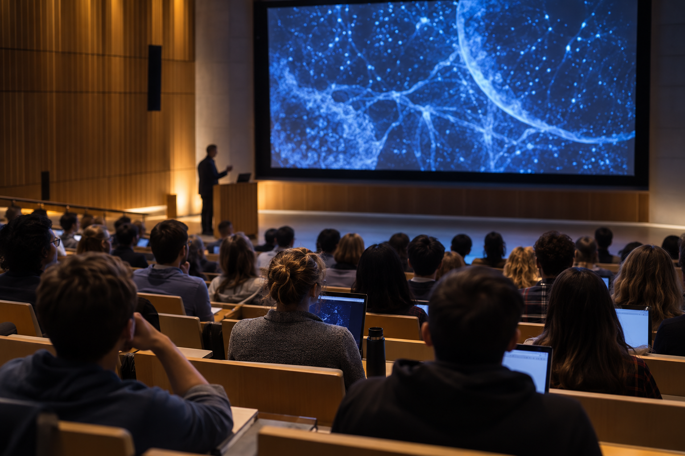

CHUNG-ANG UNIVERSITY · GSAIM ENGINEERING MONTHLY SEMINAR
ADVANCED IMAGING · RESEARCH TALK
첨단영상 청룡토크
연구의 순간이
새로운 대화가 되다.
첨단영상청룡토크는 중앙대학교 첨단영상대학원 공학전공에서
매월 열리는 우수 실적 발표 세미나입니다.
01RESEARCH THEMES
WHAT WE TALK ABOUT
청룡토크에서 만나는
여러 주제의 연구
02UPCOMING TALK
NEXT TALK
다음 청룡토크
THE NEXT TALK
다음 발표 일정을 준비하고 있습니다.
일정이 확정되면 시간, 장소, 발표자와 주제를 이곳에서 확인할 수 있습니다.

ILLUSTRATIVE IMAGE · ACTUAL EVENTS MAY DIFFERTHE SPIRIT OF CHEONGRYONG TALK
03RECENT TALKS
LATEST SEMINAR
최근 청룡토크
같은 달의 발표를 함께 소개합니다.
영상은 공개되는 대로 각 발표에 연결됩니다.
✳
NEXT CONVERSATION
다음 발표를 준비하고 있습니다.
공지 자료가 등록되면 이곳에서 일정과 발표 내용을 확인할 수 있습니다.
04THE ARCHIVE
PAST CONVERSATIONS
지난 이야기
월별 발표 주제와 연구 실적을 살펴보세요.
영상이 없는 발표도 기록으로 남습니다.
0 TALKS
01 / ∞
청룡토크의 기록이 이곳에 쌓입니다.
첫 발표 공지가 게시되면 월별 목록이 나타납니다.
05WATCH THE IDEAS
FULL TALK · ON YOUTUBE
그날의 대화를
언제든 다시.
촬영 영상은 첨단영상대학원 공학전공 YouTube 채널에서도 다시 보실 수 있습니다.
YouTube 채널 방문 ↗IDEAS IN MOTIONSEE · QUESTION · CONNECT
06STAY CONNECTED
MONTHLY NOTICE
다음 발표 소식을
받아보세요.
메일링리스트는 월별 공지 발송을 위한 명단으로만 정리합니다.